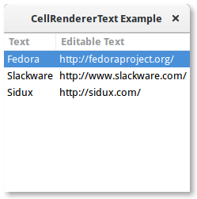
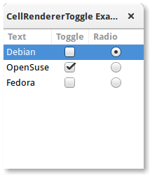
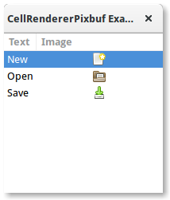
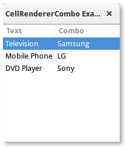
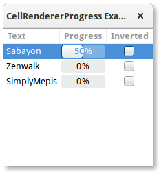
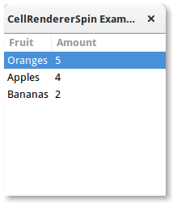

12. CellRenderers¶
Os widgets Gtk.CellRenderer são usados para exibir informações dentro de widgets como Gtk.TreeView ou Gtk.ComboBox. Eles trabalham de perto com os widgets associados e são muito poderosos, com muitas opções de configuração para exibir uma grande quantidade de dados de diferentes maneiras. Há sete widgets Gtk.CellRenderer que podem ser usados para diferentes propósitos:
12.1. CellRendererText¶
A Gtk.CellRendererText processa um dado texto em sua célula, usando as informações de fonte, cor e estilo fornecidas por suas propriedades. O texto será reticulado se for muito longo e a propriedade “ellipsize” permitir.
Por padrão, o texto em Gtk.CellRendererText widgets não é editável. Isso pode ser alterado, definindo o valor da propriedade “editable” como True:
cell.set_property("editable", True)
Você pode então se conectar ao sinal “editado” e atualizar seu Gtk.TreeModel de acordo.
12.1.1. Exemplo¶
1 2 3 4 5 6 7 8 9 10 11 12 13 14 15 16 17 18 19 20 21 22 23 24 25 26 27 28 29 30 31 32 33 34 35 36 37 38 39 40 | import gi
gi.require_version('Gtk', '3.0')
from gi.repository import Gtk
class CellRendererTextWindow(Gtk.Window):
def __init__(self):
Gtk.Window.__init__(self, title="CellRendererText Example")
self.set_default_size(200, 200)
self.liststore = Gtk.ListStore(str, str)
self.liststore.append(["Fedora", "http://fedoraproject.org/"])
self.liststore.append(["Slackware", "http://www.slackware.com/"])
self.liststore.append(["Sidux", "http://sidux.com/"])
treeview = Gtk.TreeView(model=self.liststore)
renderer_text = Gtk.CellRendererText()
column_text = Gtk.TreeViewColumn("Text", renderer_text, text=0)
treeview.append_column(column_text)
renderer_editabletext = Gtk.CellRendererText()
renderer_editabletext.set_property("editable", True)
column_editabletext = Gtk.TreeViewColumn("Editable Text",
renderer_editabletext, text=1)
treeview.append_column(column_editabletext)
renderer_editabletext.connect("edited", self.text_edited)
self.add(treeview)
def text_edited(self, widget, path, text):
self.liststore[path][1] = text
win = CellRendererTextWindow()
win.connect("destroy", Gtk.main_quit)
win.show_all()
Gtk.main()
|
12.2. CellRendererToggle¶
Gtk.CellRendererToggle renderiza um botão de alternância em uma célula. O botão é desenhado como um botão de rádio ou de verificação, dependendo da propriedade “radio”. Quando ativado, emite o sinal “alternado”.
Como um Gtk.CellRendererToggle pode ter dois estados, ativos e não ativos, você provavelmente deseja vincular a propriedade “active” no renderizador de célula a um valor booleano no modelo, fazendo com que o botão de verificação reflita o estado do modelo.
12.2.1. Exemplo¶
1 2 3 4 5 6 7 8 9 10 11 12 13 14 15 16 17 18 19 20 21 22 23 24 25 26 27 28 29 30 31 32 33 34 35 36 37 38 39 40 41 42 43 44 45 46 47 48 49 | import gi
gi.require_version('Gtk', '3.0')
from gi.repository import Gtk
class CellRendererToggleWindow(Gtk.Window):
def __init__(self):
Gtk.Window.__init__(self, title="CellRendererToggle Example")
self.set_default_size(200, 200)
self.liststore = Gtk.ListStore(str, bool, bool)
self.liststore.append(["Debian", False, True])
self.liststore.append(["OpenSuse", True, False])
self.liststore.append(["Fedora", False, False])
treeview = Gtk.TreeView(model=self.liststore)
renderer_text = Gtk.CellRendererText()
column_text = Gtk.TreeViewColumn("Text", renderer_text, text=0)
treeview.append_column(column_text)
renderer_toggle = Gtk.CellRendererToggle()
renderer_toggle.connect("toggled", self.on_cell_toggled)
column_toggle = Gtk.TreeViewColumn("Toggle", renderer_toggle, active=1)
treeview.append_column(column_toggle)
renderer_radio = Gtk.CellRendererToggle()
renderer_radio.set_radio(True)
renderer_radio.connect("toggled", self.on_cell_radio_toggled)
column_radio = Gtk.TreeViewColumn("Radio", renderer_radio, active=2)
treeview.append_column(column_radio)
self.add(treeview)
def on_cell_toggled(self, widget, path):
self.liststore[path][1] = not self.liststore[path][1]
def on_cell_radio_toggled(self, widget, path):
selected_path = Gtk.TreePath(path)
for row in self.liststore:
row[2] = (row.path == selected_path)
win = CellRendererToggleWindow()
win.connect("destroy", Gtk.main_quit)
win.show_all()
Gtk.main()
|
12.3. CellRendererPixbuf¶
A Gtk.CellRendererPixbuf pode ser usado para renderizar uma imagem em uma célula. Ele permite renderizar um dado Gdk.Pixbuf (definido através da propriedade “pixbuf”) ou um ícone nomeado (configurado através da propriedade “icon-name”).
12.3.1. Exemplo¶
1 2 3 4 5 6 7 8 9 10 11 12 13 14 15 16 17 18 19 20 21 22 23 24 25 26 27 28 29 30 31 32 33 | import gi
gi.require_version('Gtk', '3.0')
from gi.repository import Gtk
class CellRendererPixbufWindow(Gtk.Window):
def __init__(self):
Gtk.Window.__init__(self, title="CellRendererPixbuf Example")
self.set_default_size(200, 200)
self.liststore = Gtk.ListStore(str, str)
self.liststore.append(["New", "document-new"])
self.liststore.append(["Open", "document-open"])
self.liststore.append(["Save", "document-save"])
treeview = Gtk.TreeView(model=self.liststore)
renderer_text = Gtk.CellRendererText()
column_text = Gtk.TreeViewColumn("Text", renderer_text, text=0)
treeview.append_column(column_text)
renderer_pixbuf = Gtk.CellRendererPixbuf()
column_pixbuf = Gtk.TreeViewColumn("Image", renderer_pixbuf, icon_name=1)
treeview.append_column(column_pixbuf)
self.add(treeview)
win = CellRendererPixbufWindow()
win.connect("destroy", Gtk.main_quit)
win.show_all()
Gtk.main()
|
12.4. CellRendererCombo¶
Gtk.CellRendererCombo processa texto em uma célula como Gtk.CellRendererText do qual é derivado. Mas enquanto o último oferece uma entrada simples para editar o texto, Gtk.CellRendererCombo oferece um widget Gtk.ComboBox para editar o texto. Os valores a serem exibidos na caixa de combinação são obtidos de Gtk.TreeModel especificado na propriedade “model”.
O renderizador de célula de combinação toma o cuidado de adicionar um renderizador de célula de texto à caixa de combinação e o configura para exibir a coluna especificada por sua propriedade “text-column”.
A Gtk.CellRendererCombo pode operar em dois modos. Ele pode ser usado com e sem um widget associado Gtk.Entry, dependendo do valor da propriedade “has-entry”.
12.4.1. Exemplo¶
1 2 3 4 5 6 7 8 9 10 11 12 13 14 15 16 17 18 19 20 21 22 23 24 25 26 27 28 29 30 31 32 33 34 35 36 37 38 39 40 41 42 43 44 45 46 47 | import gi
gi.require_version('Gtk', '3.0')
from gi.repository import Gtk
class CellRendererComboWindow(Gtk.Window):
def __init__(self):
Gtk.Window.__init__(self, title="CellRendererCombo Example")
self.set_default_size(200, 200)
liststore_manufacturers = Gtk.ListStore(str)
manufacturers = ["Sony", "LG",
"Panasonic", "Toshiba", "Nokia", "Samsung"]
for item in manufacturers:
liststore_manufacturers.append([item])
self.liststore_hardware = Gtk.ListStore(str, str)
self.liststore_hardware.append(["Television", "Samsung"])
self.liststore_hardware.append(["Mobile Phone", "LG"])
self.liststore_hardware.append(["DVD Player", "Sony"])
treeview = Gtk.TreeView(model=self.liststore_hardware)
renderer_text = Gtk.CellRendererText()
column_text = Gtk.TreeViewColumn("Text", renderer_text, text=0)
treeview.append_column(column_text)
renderer_combo = Gtk.CellRendererCombo()
renderer_combo.set_property("editable", True)
renderer_combo.set_property("model", liststore_manufacturers)
renderer_combo.set_property("text-column", 0)
renderer_combo.set_property("has-entry", False)
renderer_combo.connect("edited", self.on_combo_changed)
column_combo = Gtk.TreeViewColumn("Combo", renderer_combo, text=1)
treeview.append_column(column_combo)
self.add(treeview)
def on_combo_changed(self, widget, path, text):
self.liststore_hardware[path][1] = text
win = CellRendererComboWindow()
win.connect("destroy", Gtk.main_quit)
win.show_all()
Gtk.main()
|
12.5. CellRendererProgress¶
Gtk.CellRendererProgress renderiza um valor numérico como uma barra de progresso em uma célula. Além disso, pode exibir um texto na parte superior da barra de progresso.
O valor percentual da barra de progresso pode ser modificado alterando a propriedade “value”. Semelhante a Gtk.ProgressBar, você pode ativar o modo de atividade incrementando a propriedade “pulse” em vez da propriedade “value”.
12.5.1. Exemplo¶
1 2 3 4 5 6 7 8 9 10 11 12 13 14 15 16 17 18 19 20 21 22 23 24 25 26 27 28 29 30 31 32 33 34 35 36 37 38 39 40 41 42 43 44 45 46 47 48 49 50 51 52 53 54 55 56 57 58 59 60 | import gi
gi.require_version('Gtk', '3.0')
from gi.repository import Gtk, GObject
class CellRendererProgressWindow(Gtk.Window):
def __init__(self):
Gtk.Window.__init__(self, title="CellRendererProgress Example")
self.set_default_size(200, 200)
self.liststore = Gtk.ListStore(str, int, bool)
self.current_iter = self.liststore.append(["Sabayon", 0, False])
self.liststore.append(["Zenwalk", 0, False])
self.liststore.append(["SimplyMepis", 0, False])
treeview = Gtk.TreeView(model=self.liststore)
renderer_text = Gtk.CellRendererText()
column_text = Gtk.TreeViewColumn("Text", renderer_text, text=0)
treeview.append_column(column_text)
renderer_progress = Gtk.CellRendererProgress()
column_progress = Gtk.TreeViewColumn("Progress", renderer_progress,
value=1, inverted=2)
treeview.append_column(column_progress)
renderer_toggle = Gtk.CellRendererToggle()
renderer_toggle.connect("toggled", self.on_inverted_toggled)
column_toggle = Gtk.TreeViewColumn("Inverted", renderer_toggle,
active=2)
treeview.append_column(column_toggle)
self.add(treeview)
self.timeout_id = GObject.timeout_add(100, self.on_timeout, None)
def on_inverted_toggled(self, widget, path):
self.liststore[path][2] = not self.liststore[path][2]
def on_timeout(self, user_data):
new_value = self.liststore[self.current_iter][1] + 1
if new_value > 100:
self.current_iter = self.liststore.iter_next(self.current_iter)
if self.current_iter is None:
self.reset_model()
new_value = self.liststore[self.current_iter][1] + 1
self.liststore[self.current_iter][1] = new_value
return True
def reset_model(self):
for row in self.liststore:
row[1] = 0
self.current_iter = self.liststore.get_iter_first()
win = CellRendererProgressWindow()
win.connect("destroy", Gtk.main_quit)
win.show_all()
Gtk.main()
|
12.6. CellRendererSpin¶
Gtk.CellRendererSpin processa o texto em uma célula como Gtk.CellRendererText do qual é derivado. Mas enquanto o último oferece uma entrada simples para editar o texto, Gtk.CellRendererSpin oferece um widget Gtk.SpinButton. Claro, isso significa que o texto deve ser analisado como um número de ponto flutuante.
O intervalo do botão de rotação é obtido da propriedade de ajuste do renderizador de célula, que pode ser definido explicitamente ou mapeado para uma coluna no modelo de árvore, como todas as propriedades dos renderizadores de célula. Gtk.CellRendererSpin também possui propriedades para a taxa de subida e o número de dígitos a serem exibidos.
12.6.1. Exemplo¶
1 2 3 4 5 6 7 8 9 10 11 12 13 14 15 16 17 18 19 20 21 22 23 24 25 26 27 28 29 30 31 32 33 34 35 36 37 38 39 40 41 | import gi
gi.require_version('Gtk', '3.0')
from gi.repository import Gtk
class CellRendererSpinWindow(Gtk.Window):
def __init__(self):
Gtk.Window.__init__(self, title="CellRendererSpin Example")
self.set_default_size(200, 200)
self.liststore = Gtk.ListStore(str, int)
self.liststore.append(["Oranges", 5])
self.liststore.append(["Apples", 4])
self.liststore.append(["Bananas", 2])
treeview = Gtk.TreeView(model=self.liststore)
renderer_text = Gtk.CellRendererText()
column_text = Gtk.TreeViewColumn("Fruit", renderer_text, text=0)
treeview.append_column(column_text)
renderer_spin = Gtk.CellRendererSpin()
renderer_spin.connect("edited", self.on_amount_edited)
renderer_spin.set_property("editable", True)
adjustment = Gtk.Adjustment(0, 0, 100, 1, 10, 0)
renderer_spin.set_property("adjustment", adjustment)
column_spin = Gtk.TreeViewColumn("Amount", renderer_spin, text=1)
treeview.append_column(column_spin)
self.add(treeview)
def on_amount_edited(self, widget, path, value):
self.liststore[path][1] = int(value)
win = CellRendererSpinWindow()
win.connect("destroy", Gtk.main_quit)
win.show_all()
Gtk.main()
|